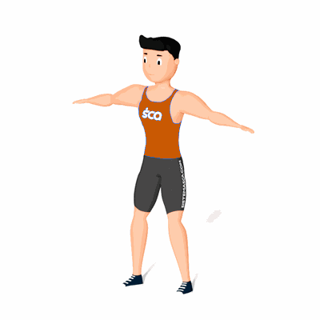

Polichinelo Cruzado

Uma variação do polichinelo com o objetivo de trabalhar o fortalecimento e resistência muscular, equilíbrio e também queimar calorias.
Ficha Técnica
Tipo: Aeróbico
Grupo Muscular: Corpo
Aparelho: Nenhum
Músculos: Nenhum
Como realizar
- Em pé e coluna reta;
- Pule e abra os braços para lateral na altura dos ombros, as pernas devem ser movimentadas juntas;
- Quando pular para fechar o polichinelo, cruze um braço por cima do outro e uma perna na frente da outra;
- Repita os movimentos pelo tempo prescrito pelo professor(a).
 RC STORE
RC STORE